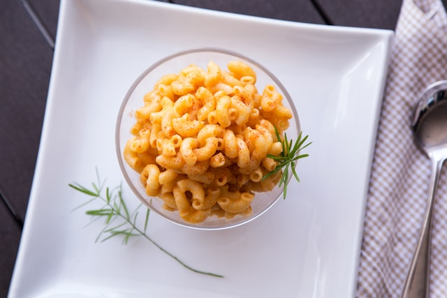

Stovetop Mac and Cheese

Description
Homemade creamy, cheesy macaroni and cheese...without the box! Macaroni and Cheese is a super simple, quick side or main event. Try out this yummy version of a classic comfort dish. So easy, even my 8 year old can make it!
Ingredients:
- Pasta (16 oz)
- Grated cheddar cheese (2 cups)
- Milk (1.5 cups)
- Butter (1 Tbsp)
- Flour (2 Tbsp)
- Salt, Pepper, Garlic to taste
Steps:
- Boil pasta until soft. Set aside.
- Melt butter in saucepan. Add flour then milk. Stir until mixture begins to thicken.
- Add cheese and stir until melted into sauce.
- Season sauce to taste.
- Add in pasta and stir until well coated.
Back to Main Page